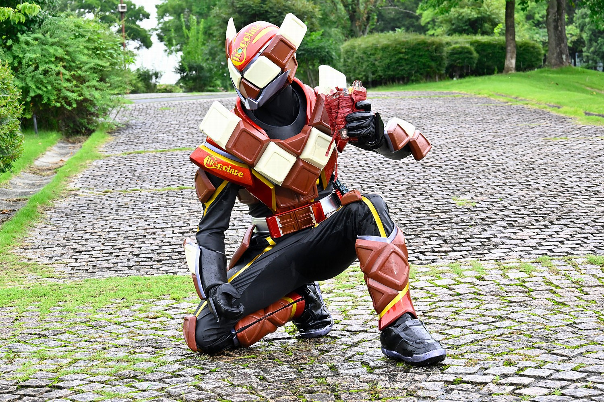
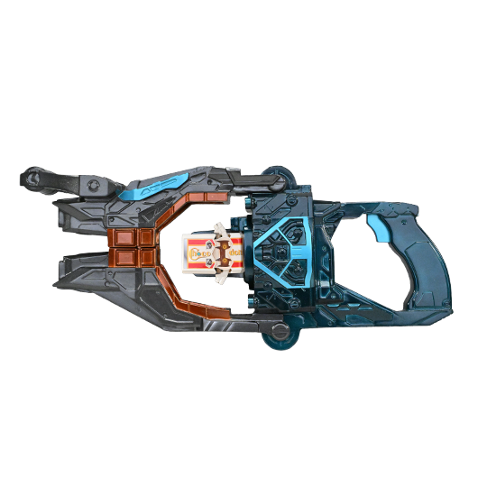
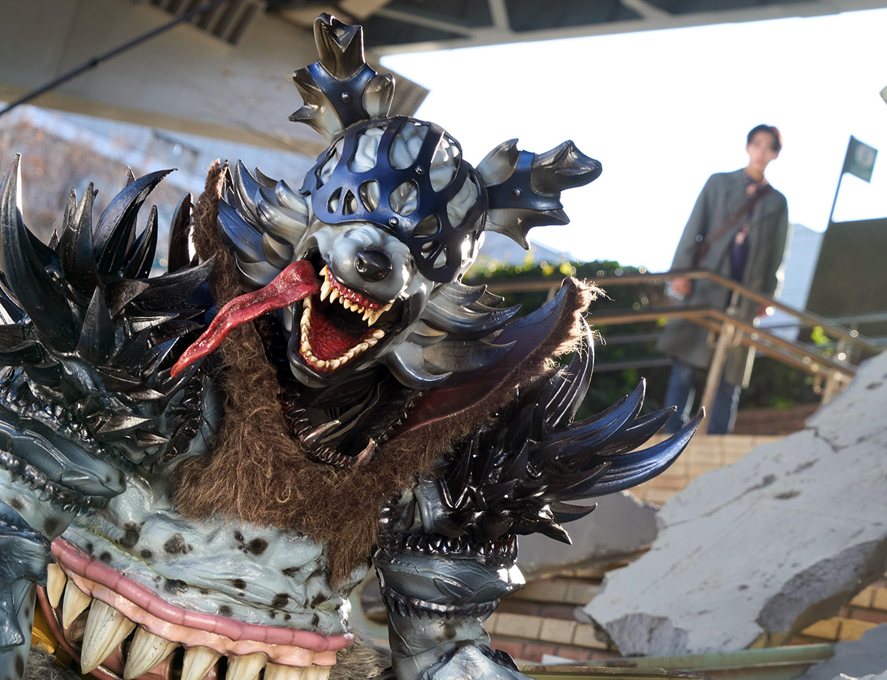
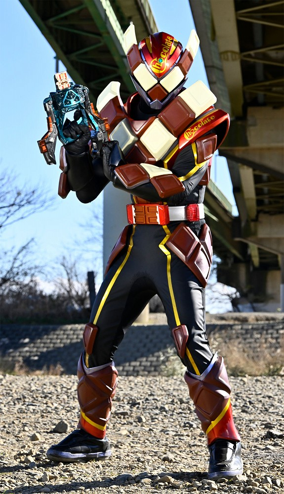
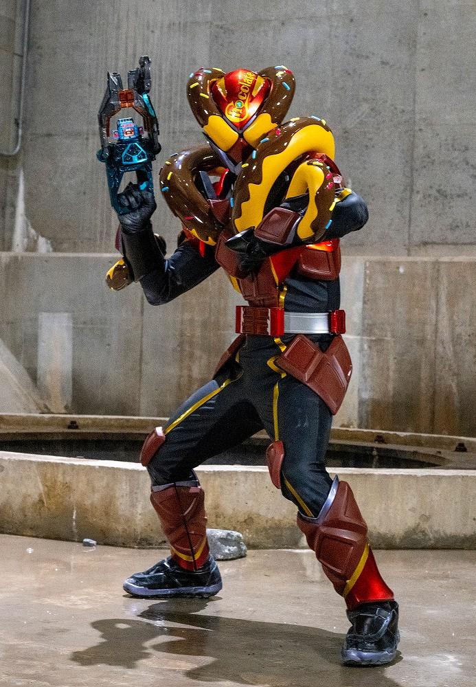
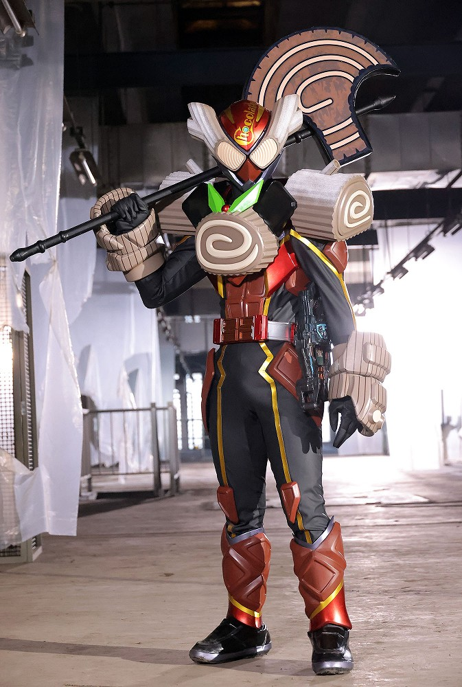
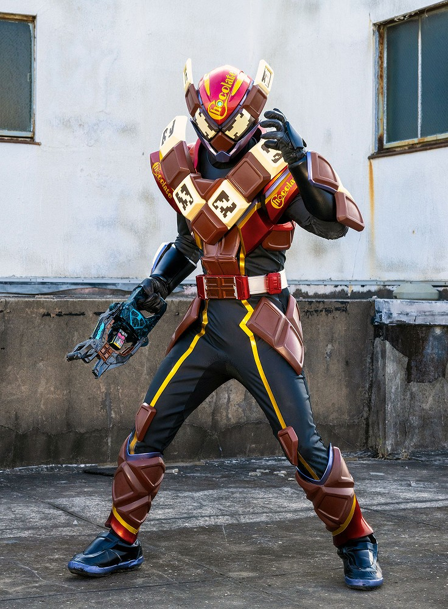
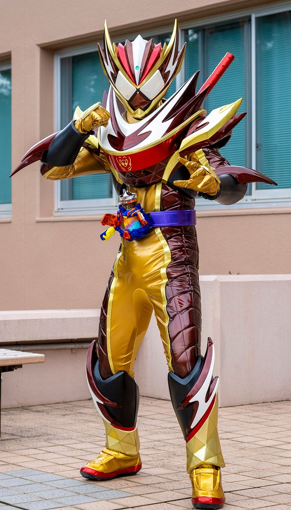
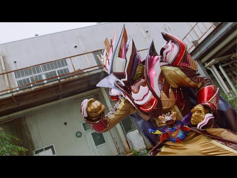

2024年から放送された「仮面ライダーガヴ」に登場する仮面ライダー
変身者は辛木田絆斗。改造手術を受けており、自身の体にグラニュートの
器官を移植している。
基本スペックはガヴよりも低い。
基本形態はチョコドンフォーム。
身長：196.8cm 体重：79.6kg パンチ力：0.6t キック力:0.9t ジャンプ力：ひと跳び3.0m 走力：100mを8.0秒程度

変身銃「ヴァレンバスター」にゴチゾウと呼ばれる眷属をセットし、レバーを開閉し、
トリガーを引くことで変身する。
レバーが閉まるとゴチゾウに電気ショックが加わり、強制的に力を開放する。

人間の世界とは別の世界の住人。
グラニュートの世界にある特別な扉を通じて人間の世界に来ている。
基本的に人間を襲うことはないが、一部闇菓子という人間から作られる
お菓子を食べるため、そのお菓子を作っているストマック社のバイトとして
人間の世界に現れ、人間をさらう。グラニュートは人間に化けることもできる。

チョコドンフォーム
「チョコドン」ゴチゾウで変身
素のスペックが低い分、持ち前の格闘術と銃での攻撃を行う。
銃から放たれるチョコでできた弾丸は相手の攻撃のほかにも、
味方の武器の強化にも使用できる。

ドーマルフォーム
「ドーマル」ゴチゾウで変身
前進各部のドーナツ型の装甲を飛ばし、敵を拘束する。
戦闘力はそこまで高くないが、味方のアシストに長けており、
ドーナツを飛ばして足場にしたり、ホイップを入れることでドーナツを高速回転させ、
爆発させたりできる。

ブシュエルフォーム
「ブシュエル」ゴチゾウで変身
斧型武材「クリスマックス」を用いた、パワフルな戦闘が得意。
クリスマックスは起爆性の粒子を散布でき、それをヴァレンバスターの銃撃で引火させ、
爆発を起こすことができる。

チョコルドフォーム
「チョコルド」ゴチゾウで変身
体内に埋め込まれたグラニュートの期間を活性化させ、高い戦闘力を発揮する。
戦闘中は問題がないが、戦闘後に心臓等に高い負担がかかってしまう。
これに変身しないと、苦痛が収まらないため、悪循環が起きてしまう。

フラッペカスタム
「フラッペいす」ゴチゾウと変身ベルト「ヴラスタムギア」で変身
戦闘力、行動速度や聴覚などの各能力が向上。
氷の能力を持ち、腕部や脚部に氷塊を纏わせ、攻撃や防御に利用できる。
フラッペいすはフラッペのゴチゾウのため、戦闘が長引けばとけてしまうかのうせいがある。

パルフェモード
「チョコらっぱ」ゴチゾウで変身
特殊なゴチゾウで、使っても消滅しない。
ヴァレンの最強形態。
移植したグラニュートの器官の副作用で他の形態になると、体に負担がかかってしまっう状態だったが、
この形態ではゴチゾウが痛みを緩和するため、本調子ではないが戦える。
フラッペカスタムにも緩和能力はあったがこちらのほうが能力が高い。
フラッペカスタムを上回るスペックを誇る。
仮面ライダー一覧